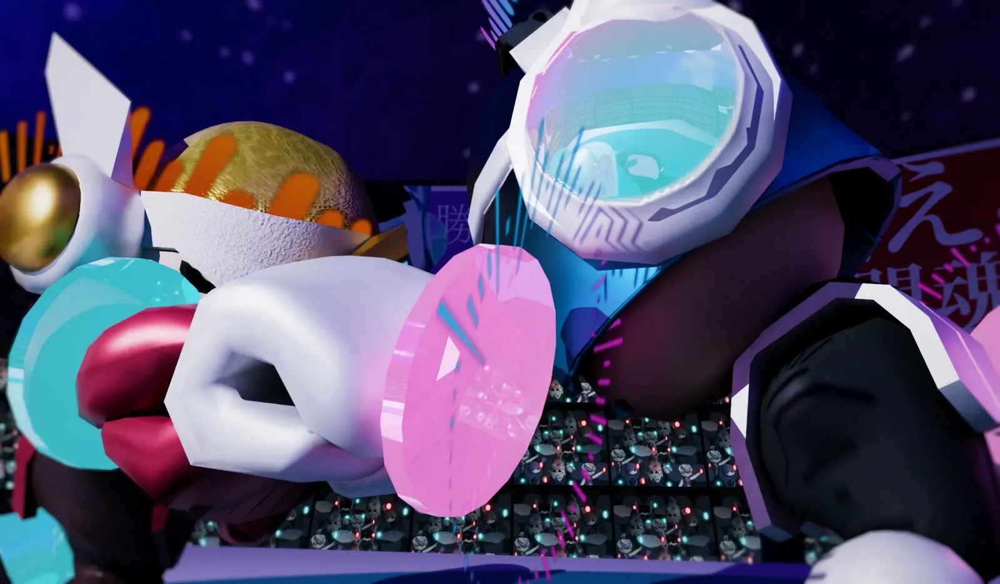
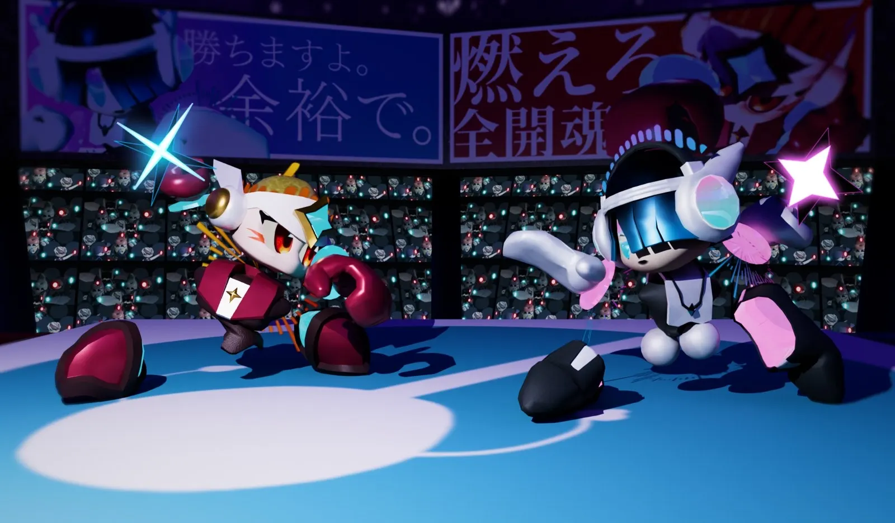
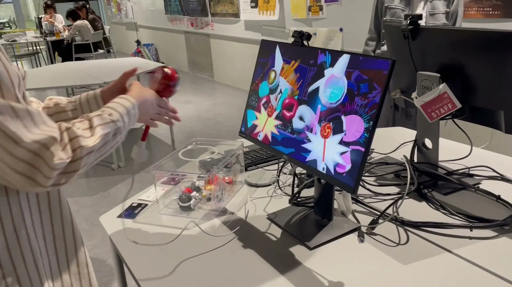
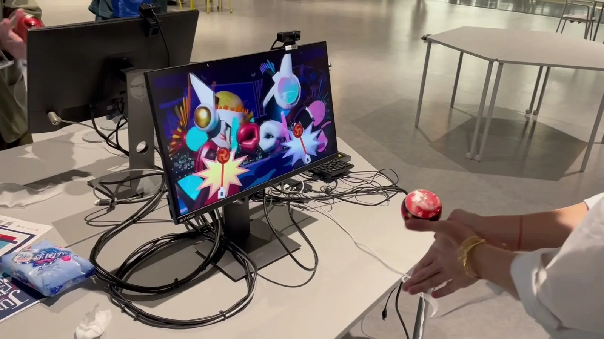
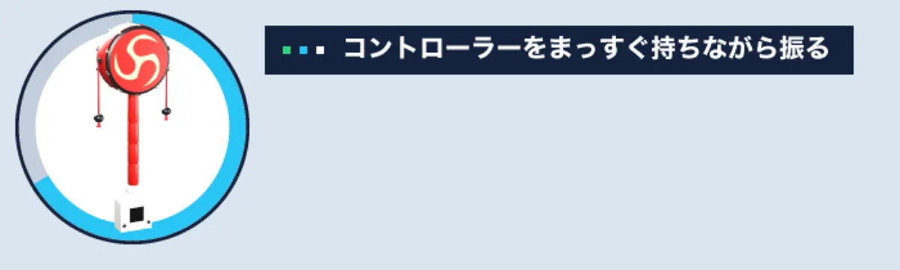
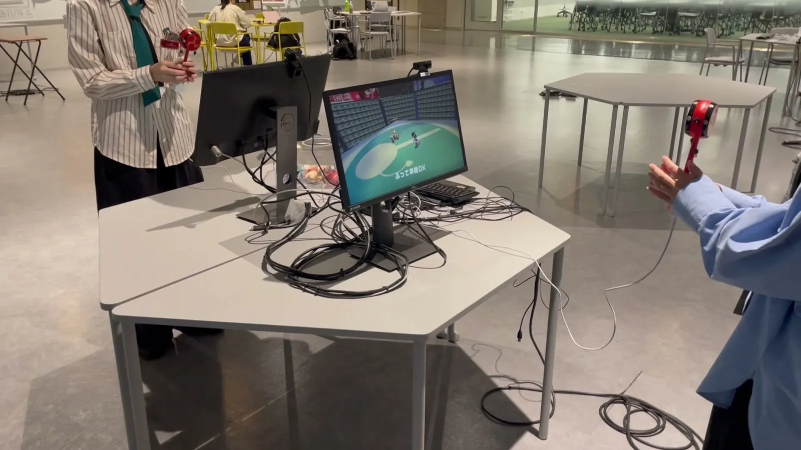
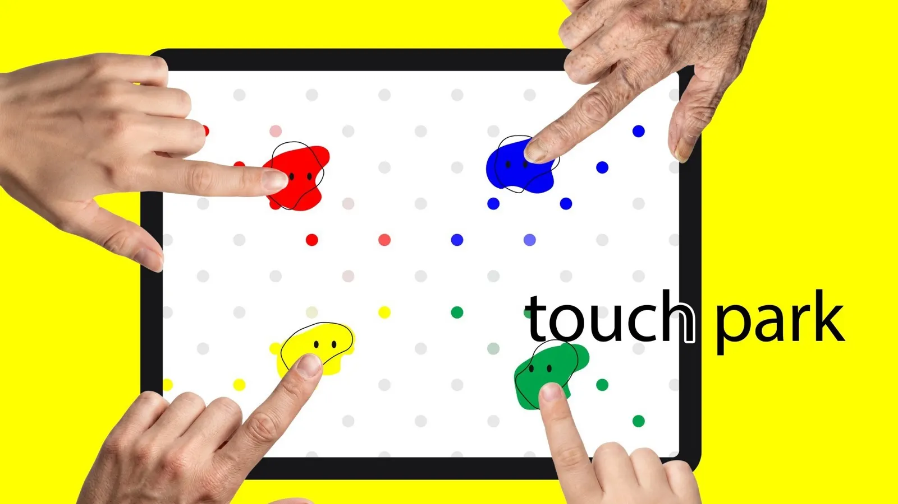

01作品概要
遊び方
でんでん太鼓を振ると、パンチが出る。
当たると、相手を押し出せる。
展示でふらっと来た初めての人が、すぐに遊び方がわかり、3 分で遊べること。
ここが好き
とにかく振りまくれる遊び。



02遊びの広げ方
でんでん太鼓の気持ちよさに、
相手と画面を足した。


- 残した
- 玉が当たる音と、手に返ってくる感覚。本物のでんでん太鼓にセンサーを付けた。
- 見立てた
- 太鼓の玉が前に飛び出す動きを、パンチに見立てた。だから、振るとパンチが出る。
- 足した
- 向かい合う相手と、振るほど変わる画面。どちらがたくさん振れるかの勝負になり、振り合う姿も見ていて面白い。
03試行錯誤と学び
学んだこと楽しみどころを見極めて、伝わる形にする。
はじめの企画
振って傾ける
レースゲーム
試遊の声
傾けながら
振るのは難しい
いまの形
振るだけの
2 人対戦

展示では、みんな必死にでんでん太鼓を振っていて、傾ける余裕はなかった。
楽しみどころは「振る」こと。
操作を、振るだけに絞った。
全力で振れるようになり、振り合う姿で周りも盛り上がった。

次の作品
touch park
みんなで同時に触る、デジタルツイスター。